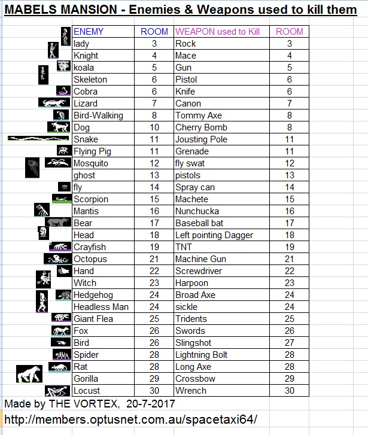
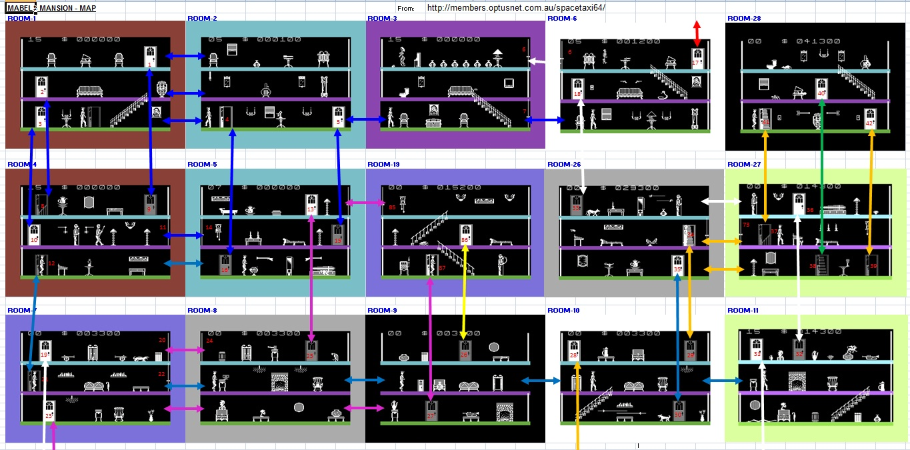
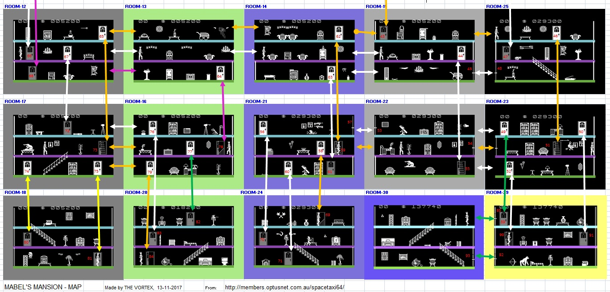
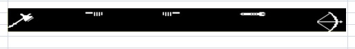
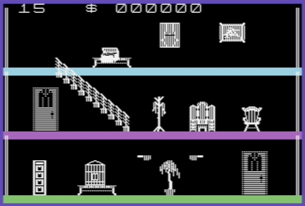
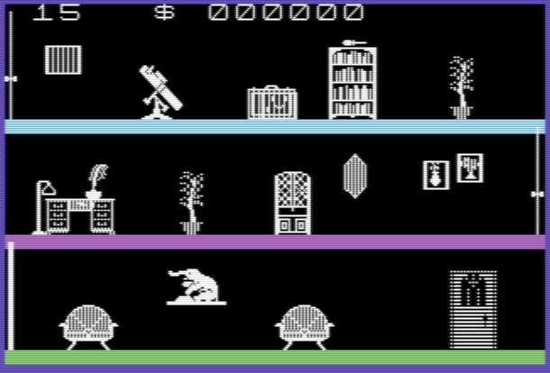
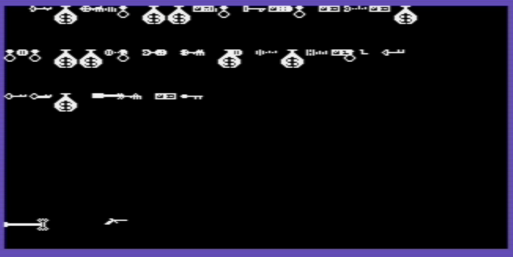

There is a Big Bug in MABEL'S MANSION - C64 version. I want
to warn people about this Bug.
Simply put, I have Completed all Tasks as per the Game Instructions,
ie-
Collected all Treasures & Objects, all Weapons & Killed
all Enemies. Note: there are 90 Rooms in this game, I have also collected
all keys & unlocked & entered all doors.
I get to the last door in the house, which must be the EXIT,
but it will not Unlock & will not open, so the Game can't be completed.
And I know I have been to every room.
The Year is 2015, and I was playing a few old games that I
had never completed. I had just got through the game AZTEC by Datamost, and
I was looking for a similar game with those Early Apple ][ style graphics.
And that is when I stumbled accross Mabel's Mansion, for the
Commodore 64. I played it for a few weeks & then got stuck, but could
not find anything in the way of Hints, Tips or a Walkthrough, on the net.
I stumbled around and completed 90% of the game, as I visited 28 of the 30
Screens. According to the Manual, each Screen has 3 platforms which count
as 3 Rooms per screen, so 90 Rooms in Total.
With no one to Help, and I was at a Dead end. I left the game
sit for 2.5 years, and in 2017, I started the game again to try to complete
it.
This is a Keyboard game, with lots of keys, which makes it
hard to play. So I came up with a Brilliant idea :
to use "XPADDER" , software that converts
Keyboard games to Joystick !
I Installed VICE C64 Emulator, on my PC (running Windows 7).
And XPADDER, and then loaded Mabel's Mansion.d64
I wanted to use my USB Joystick and my "JOYMASTER USB-3"
, so I downloaded XPADDER and after a bit of customisation, by using 2 Key
Sets, I got the game working with a Joystick and only 1 Fire Button.
At first I just had UP, DOWN, LEFT, RIGHT & FIRE, but
I soon found a way to better set up the Joystick:-
XPADDER will press multiple keys, in any order you want, so
I set it up so when you push JOYSTICK UP , Xpadder pushes the "U"
key and one second later the "F" key. (U = Walk UP Stairs, F= Walk
FORWARD through a door)
So if you are Walking Left or right and you push UP, you will
:
Walk FORWARD through a door
- if you are in front of one.... or...
Walk UP the stairs,
if you are next to some Stairs.
And you can Repeat this customisation, so that JOYSTICK DOWN
= press "D" key and one second later press "B" key.
I then added a customisation so that if you Push JOYSTICK
LEFT or RIGHT and you push the JOYSTICK FIRE, the guy will JUMP.
I then added another customisation so that if you Push JOYSTICK
FIRE, then Xpadder will press the "P" key 3 times, & then press
the "O" key 3 times, & then press the "T" key once,
& then press the "SPACE" bar once.(P = PUSH, O=OPEN, T=TAKE,
SPACE=SHOOT WEAPON)
So now all the ACTION keys are controlled by my Joystick,
so the only Keys you use on the Keyboard are:
F1 = SAVE GAME, F3=LOAD GAME, I= INVENTORY , A = Select Attack
Weapon . F7=Change Keyboard key assignments.
I must say that this Game is 1000% better when you play with
Joystick.
NOTE: This section is currently under Construction
, November-2017
Weapons + Enemy

Map
NOTE: The ROOM numbers are in the order that I first
got access to them.


This is an upgraded Map, where I have improved two things:
(1) All the Doors are now numbered so when the Walkthrough/Solution
is created, it will be very easy to go to exact locations & have an idea
What Triggers & keys unlock which Doors.
(2) Now the Colour of the Arrows shows you exactly where that
path leads. This makes life easier when you want to get from one section to
another.
10-10-2020 A bug was fiound in my MAP, a new version of the
MAP will soon be added here.
BUGS in the Game
(1) STAIRS Bug
If you are Walking down a set of Stairs and you press the
"D" key Repeatedely, then the guy will walk off into space and be
permanently 1cm below the Platform level that he should be walking on. There
is no way to fix this , even if you walk into a New Room, you are still in
the wrong spot Visually. The Game seems to Function OK even with this bug,
it still seems to know where yoyu are . You can stil interact with objects.
(2) BUG for JUMP & ATTACK in Room-11
In Room 11, if you Jump several times in a row, to the Right,
you will eventually Jump through a Wall, and end up in Room-12.
This bug also occurs in any room that has an Enemy. If you
are struck by an Enemy, it will push your character to the right. If you are
struck multiple times in one contact with an enemy, it can throw your character
a large distance to the right, which will send you through the wall &
into the next room.
(3) WALL Bugs - Walk through Walls
By moving an object to the right until it touches the wall,
you can now walk through walls. I was able to do this in several rooms, which
I have listed below:
Room-8 B- Push Drum to wall, walkthrough Right wall to Room-9B
Room-11 T- Push Trumpet to wall, = walkthrough Right wall to Room-12T
Room-11 M- Push Jug to wall, = walkthrough Right wall to Room-12M
Room-11 B- Push Box to wall, = walkthrough Right wall to Room-12B
Room-25 T- Push Window/Grill to Right wall = walkthrough Right wall to Room-17T
Room-23 B - Push stool right = walk through Right wall to Room-18B
Room-30 M - Push Piano right = walk through Right wall to Room-29M
Note for above: T = Top Level, M =
Middle level, B = Bottom Level
(4) DESIGN Bug - Room 14
If you are in Room 14, on the Top Level, You will see an empty
Wall to the Right, so you would obviously explore & walk to the Right
to enter the next Room. But When you Enter the next Room, (Which is Room 15),
you will Notice that you have walked through a Wall !!
Room 15, Top Level: Left Wall is Solid, so you are now stuck
in Room 15 ! HELP !!!
This may not be a Bug, Who Knows? it may be part of the game
design , to be a one-way trip ??
But this does not affect game play because if you Go from
Room 15 to Room 25, then 23, then 22, then 21, there is a Door that leads
you right back to Room 15, on the same Top level. So this is not really a
problem.
(5) WEAPONS Bug - (A Very serious bug
that you need to avoid)
Take a look at the 6 WEAPONS SETS. Each set has 5 Weapons
in it. Set 6 is the way your WEAPONS should look when you are in any of the
lower part of the map, if you have collected all the Weapons. (Rooms 18-30).
There is a Bug in the game that lets you pick up 2 small Dagers
as seperate items. If you do this you will not be able to complete the game.
Here is a screen shot of the Weapons, when the BUG occurs.
Note: one Dagger points right, and one Dagger points left, and they are seen
as 2 separate Weapons.

When this occurs, if you pickup the Sickel, the Game will
not recognise it, and that is why you will not be able to complete the game.

THE SOLUTION - How to avoid the BUG
The solution to this problem is simple. DO NOT PICKUP BOTH
DAGGERS AT THE SAME TIME, as you only need one Dagger to KILL the HEAD in
Room-18.
You should first Pickup these items: Broad Axe, Crossbow,
Wrench, Dagger, & Sickel. And use all 5 of them to Kill the various enemies.
You can then return to Room-18 and pickup the 2nd Dagger, at any time later
in the game, and then it will be placed TOGETHER with the other Dagger.
Here is a screen shot of the Weapons, when you have picked
up Weapons in the correct order. Note: the Daggers combine into one storage
location.
The Mabel's Mansion - Manual
Click the Picture to Download the Game Instruction
Manual. Note: This is from the Apple][ version of the Game, so only the Keys
are slightly different.
Tips

Jumping
You can jump every enemy, even birds & flying creatures.
The smaller the enemy, the easier it will be to successfully jump it.
The Dog is the hardest to jump, it took me 22 attempts before I fluked one
safely.
The longer you hold the JUMP button , the further the Jump
will last it seems.
Yes I know the bird is flying at you, level with your head,
but some how the game lets you jump it quite easily because it is so small.
Weapons
There is a Weapon to kill each enemy, you just have to find
it but
Most of the time the Weapon & enemy are loacted in the same room.
If you select a Weapon to carry, but change your mind, just press "I"
for INVENTORY
and this will return the Weapon to your pocket.
Weapons Sets
There are 6 Weapons Sets. I beleive that due to programming
limits of the Game makers knowledge, regarding Sprites, Only 5 Weapons can
be displayed at one time.
So depending on what Room your are in, if you select a Weapon,
it will only display weapons that are linked to those rooms.
Searching: Push, Open, Take
To Search a piece of Furniture, you would commonly press "P"
Push, then "O" Open
and then "T" Take. And then press "I" to see what you
found ?
But there are 2 things you need to know:
Very important - You need to try searching, standing in several different
positions.
Try stand :
(1) In front of a table, and
(2) to the left of it, and
(3) to the right of it.
When I say Search, I mean you must press P and O and T several times.
Secondly, Keep checking your INVENTORY regularly, coz quite
often all you need to do
is OPEN a Table and you will automatically Take an item that was hidden in
the table.
Samething happens sometimes when I PUSH an item, then I suddenly have a KEY
appear in my INVENTORY. So you don't always need to press "T" TAKE,
to get items.
Inventory

This is another part of the game that seems
to suffer from Game makers programming limitations. Items seem to change appearance
depending on what rooms you are in, and there are lots of duplicated sprites.
So I find the inventory is only useful to look at when you first enter a room
and then check it again after you search a room to see what you have found.
Once you leave a room, things in the Inventory get confused.
The main items of importence in the Inventory for me are the
KEYS. You can find some info & pictures of the keys Below.
Doors & Keys
Sometimes you need a key to open a door, others are simply
unlocked and then all you
need to do is PUSH & OPEN the Door.
Some Doors you will open but you will not be able to enter
when you press F or B.
This is because the Open Door is still blocked/locked until you find the object
that triggers it to let you in.
Some Doors do not need to be open to enter. I know this is
very strange but I have walked through several doors that are closed, like
: Room-21 (Door-60) & Room-24 (Door-71)
So always be adventerous and give it a try, just stand in front of the door
and try F & B keys.